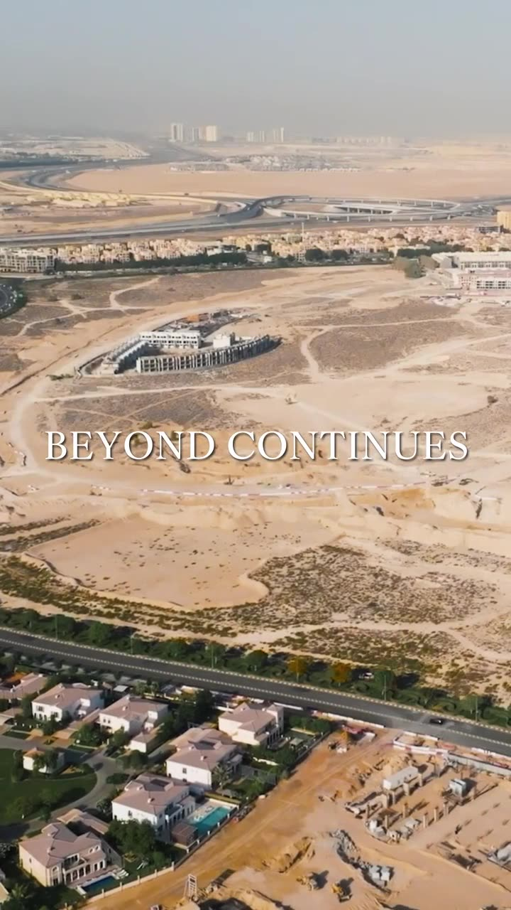

01Reportage Group · 2025
Verdana
From square footage to a sense of belonging.
Community-first storytelling for Reportage’s township, built on the “Beyond Takes Shape” platform.
- 11M+Views
- 20K+Interactions
- 5K+Followers gained
Verdana
From square footage to a sense of belonging.
Overview
Verdana is Reportage’s community township. Built on the “Beyond Takes Shape” platform, the content moved the conversation from square footage to belonging, so people could picture a life there, not just a purchase.
Idea
Lifestyle-first storytelling: resident moments, neighbourhood rhythms and community activations, cut into feed-native reels with the hook in the first second.
- 11M+Views
- 20K+Interactions
- 5K+Followers gained
01The films
Community reels
- Format
- Vertical reels
- Platform
